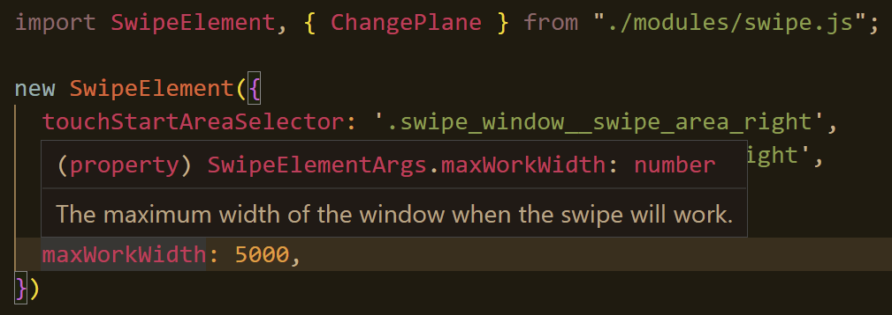

@@include('_head.htm', {
'title': 'Rules'
})

<body>
	@@include('_header.htm', {
	'title': 'Rules'
	})
	<main class="main">
		<div class="main__body">
			<div class="refbar block">
				<button class='refbar__item' type='button' data-scroll-to="._html">Html</button>
				<button class='refbar__item' type='button' data-scroll-to="._stylus">Stylus</button>
				<button class='refbar__item' type='button' data-scroll-to="._ts">Scripts</button>
			</div>
			<section class='advantage block _html'>
				<div class='advantage__body'>
					<h2 tabindex='0' class='advantage__title title'>Html</h2>
					<p class="advantage__text text-center">The pages consist of two parts, thanks to the <a href="" class="ref blue-text">fileInclude</a> template engine.</p>

					<ul class="section__list section__list_centred section__list_left section__list_big-margins">
						<li class="section__li">
							<p class="section__text">
								Default pages that will fall into the folder with the result.
								Must have <code class="code green-text">.html</code> extension.
							</p>
						</li>
						<li class="section__li">
							<p class="section__text">
								Page-components that will not get into the folder with the result, but can be embedded in default pages.
								Must have <code class="code green-text">.htm</code> extension. For convenience, I also recommend defining them with underscores at the beginning of the file, as you can see below.
							</p>
						</li>
						<li class="section__li section__li_centred section__li_end">
							<div class="advantage__preview-block advantage__preview-block_inline">
								<pre>
@@include ('_block.htm', {
  "optionName": "value",
})
</pre>
							</div>
						</li>
					</ul>
					<p class="advantage__text text-center">
						I recommend installing the components in the... Components folder.
					</p>
					<div style="margin: auto;">
						<pre>
📦#src
┣ 📂components
┃ ┣  _header.htm
┃ ┣  _footer.htm
┃ ┗  _yourComponent.htm
┗  index.html
</pre>
					</div>
				</div>
			</section>
			<section class='advantage block _stylus'>
				<div class='advantage__body'>
					<h2 tabindex='0' class='advantage__title title'>Stylus</h2>
					<p class="advantage__text text-center">And now a little about the rules that are used to work in the template.</p>

					<ul class="section__list section__list_centred section__list_big-margins">
						<li class="section__li">
							<p class="section__text">Style files are divided into default and components.</p>
						</li>
						<li class="section__li">
							<p class="section__text">
								If you want to create a separate .css file in the result folder, create and connect default <span class="green-text fat-text">LikeMe.styl</span>.
							</p>
						</li>
						<li class="section__li">
							<p class="section__text">
								If you want to create a style file that will not be added to the folder with the result, but it can be connected to other style files - use the underscore prefix <span
									class="green-text fat-text">_LikeMe.styl</span>.
							</p>
						</li>
						<li class="section__li section__li_vertical section__li_end">
							<div class="demo-spoiler__spoiler-block">
								<button aria-label="open spoiler with refs" type="button" class='spoiler_btn fat-text orange-text'>Don't forget to install that's extensions:</button>
								<div class='spoiler_content'>
									<div>
										<a class="ref blue-text" target="_blank" href="//marketplace.visualstudio.com/items?itemName=sysoev.language-stylus"> Stylus for VSCode</a>
									</div>
									<div>
										<a class="ref blue-text" target="_blank" href="//thisismanta.github.io/stylus-supremacy/"> Great formatter for
											stylus in VSCode</a>
									</div>
								</div>
							</div>
						</li>
					</ul>
				</div>
			</section>
			<section class='advantage block _ts'>
				<div class='advantage__body'>
					<h2 tabindex='0' class='advantage__title title'>Scripts</h2>
					<p class="advantage__text text-center">
						This pack mainly uses TypeScript. <br>
						TypeScript is like JavaScript, but <span class="fat-text">better</span>. <br>
						<span class="fat-text">(You can also write in JS)</span>
					</p>

					<ul class="section__list section__list_centred">
						<li class="section__li">
							<p class="section__text">Does not allow most of the errors even at the stage of writing code (like the type mismatch error).</p>
						</li>
						<li class="section__li">
							<p class="section__text">Has its own useful features (such as enums and generics).</p>
						</li>
						<li class="section__li">
							And in VSCode, hints work great for him! You don't have to guess whether an object has a property or not.</p>
						</li>
						<li class="section__li section__li_centred">
							<a class="ref blue-text" href="//www.typescriptlang.org/">More about TypeScript</a>
						</li>
					</ul>

					<h2 tabindex='0' class='advantage__title title title_padding'>Okay, how to start?</h2>

					<p class="advantage__text text-center">
						You can look into the folders under the path <span class="code green-text fat-text">#src/scripts</span> and <span class="code green-text fat-text">#src/scripts/modules</span>.
					</p>
					<p class="advantage__text text-center">
						Note a modules are used here that make it easy to use scripts. Nothing prevents you from writing code as convenient, but still try to try.
					</p>
					<p class="advantage__text text-center">
						There is no special need for you to get into the modules themselves (<span class="code green-text fat-text">#src/scripts/modules</span>), you just need
						to connect them using files in the <span class="code green-text fat-text">#src/scripts</span> folder. <br>
						The ones that use the
						<span class="fat-text">"Conn"</span> postfix.
						In them you will make all the settings, and then connect them to the pages.
					</p>
					<p class="advantage__text text-center">
					<pre>
📂scripts
┣ 📂modules
┃ ┃ Here you can create an independent script file
┃ ┗  module.ts/js
┃ Here you can create a file in which the module 
┃ will be called and configured, and connect it to the html page.
┗  moduleConn.ts/js</pre>
					</p>
					<p class="advantage__text text-center">
						<span class="fat-text">What for?</span> <br>
						Believe me, it will be easier for a 10-page site with different cases to have files that connect modules to a page separately than to contain several files in which
						scripts are connected at random.
					</p>

					<h2 tabindex='0' class='advantage__title title title_padding'>By the way, the documentation is here!</h2>

					<p class="advantage__text text-center">
						Of course it's a bit loud, but you won't stay without comments. <br>
						Comments have already been written in ready-made modules using <a class="ref blue-text" href="//tsdoc.org/" target="_blank">TS Doc</a>, you just need to hover the cursor over some
						property.
					</p>
					<figure>
						
						<figcaption>Just hover on a property, and you will see a hint! :3</figcaption>
					</figure>
				</div>
			</section>
		</div>
	</main>
</body>

</html>

@@include('_scripts.htm', {
'spoilers': true,
'tabs': false,
})

<!-- 
		Made in Russia, with ❤, by Ivan Ulyanov. 
	-->